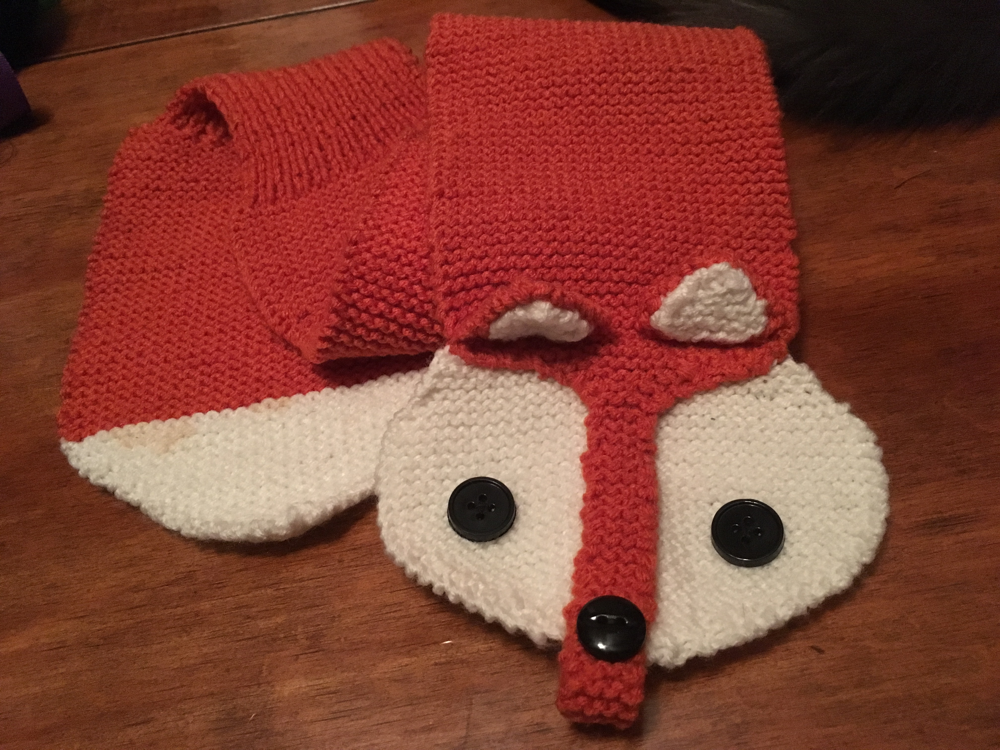

My first attempt at crochet happened several years before I actually got into it. Why? Because everyone told me to start out with something basic, like a single-colored potholder, before attempting anything interesting.
Guess what? I was so bored that I dropped that project with a quickness and didn't try to crochet until years later.
When I started crocheting again, I didn't bother with potholders or basic scarves or basic anything. They say it's "the best way to develop your skills," but what's the point if you're not going to follow through?
So instead, I picked a project that I was actually excited about, a faux-fox stole. Though I chose a relatively easy pattern, it was one that was definitely beyond my skill level at that point. I struggled a fair amount in the process and ended up with an imperfect product, but it was one I loved anyway.
Since then, I've completed several projects that I've love, love, loved, and I'm fairly certain the recipients have at least not felt the urge to chuck their gifts in the Goodwill bin as soon as they think they can get away with it. If you hope to have similar success, look no further...